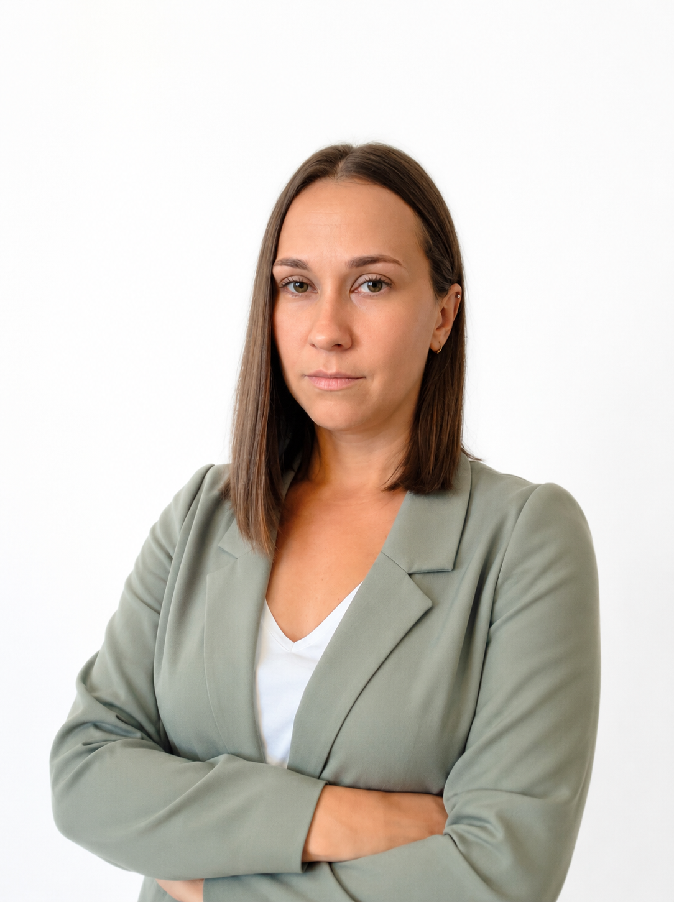

mgr Paulina Wierzchowska-Kujawa
Absolwentka międzyuczelnianego kierunku Uniwersytetu Gdańskiego i Gdańskiego Uniwersytetu Medycznego. W terapii stawia na budowanie relacji, wnikliwą diagnostykę i konsekwentne dążenie do celu.
Umów wizytę
O mnie
Główne specjalizacje:
W pracy stawiam przede wszystkim na relację z pacjentem i jego rodziną. Wierzę, że zaufanie, poczucie bezpieczeństwa, współpraca i wzajemna motywacja są fundamentem skutecznej terapii.
Do każdego pacjenta podchodzę indywidualnie i holistycznie. Wnikliwa obserwacja, szczegółowy wywiad i rzetelna diagnostyka pozwalają mi dobrać metody i techniki pracy odpowiadające konkretnym potrzebom pacjentów. W razie potrzeby współpracuję z innymi specjalistami, aby zapewnić kompleksowe wsparcie i jak najlepsze efekty terapii. Jestem terapeutką nastawioną na osiąganie konkretnych celów i konsekwentnie do nich dążę.
Prywatnie
Poza pracą cenię czas spędzany z mężem, bliskimi i moim psem. Chwile wytchnienia odnajduję podczas praktyki jogi, w podróżach oraz przy dobrej książce lub serialu. Wierzę, że zachowanie równowagi między życiem zawodowym a prywatnym pozwala mi z większą uważnością i zaangażowaniem towarzyszyć moim pacjentom.
Obszary pracy i grupa pacjentów:
-
Diagnoza i terapia neurologopedyczna Wnikliwa ocena funkcji aparatu mowy, połykania oraz oddychania, a także dobór indywidualnych technik terapeutycznych.
-
Wsparcie najmłodszych (Niemowlęta i Dzieci) Ocena odruchowych reakcji ustno-twarzowych, wspomaganie rozwoju mowy od pierwszych miesięcy życia oraz praca z dziećmi w wieku przedszkolnym i szkolnym.
-
Terapia młodzieży i dorosłych Korekcja wad wymowy, praca nad dykcją oraz wsparcie pacjentów z wyzwaniami o podłożu neurologicznym.
-
Interdyscyplinarna współpraca Ścisła współpraca z rodzicami oraz innymi specjalistami (fizjoterapeutami, lekarzami) w celu osiągnięcia optymalnych rezultatów.
Ukończone kursy i szkolenia
Elektrostymulacja
- Elektrostymulacja w logopedii Prowadzący: Ewa Wojewoda, Aleksandra Kaczyńska
- ENMOT Elektro Neuro Mobilizacja Obszaru Twarzowego Prowadzący: Magdalena Mazur, Sebastian Grzechnik
- Funkcjonalna elektrostymulacja w pediatrii – praktyczny kurs elektrostymulacji funkcjonalnej Prowadzący: Ewa Wojewoda, Aleksandra Kaczyńska
Kinesiotaping
- Kinesiotaping logopedyczny od podstaw – podejście praktyczne Prowadzący: Ewa Wojewoda, Aleksandra Kaczyńska
Terapia karmienia i wczesna interwencja
- SZKOŁA JEDZENIA – wspomaganie dzieci w trudnościach w połykaniu, gryzieniu i ssaniu Organizator: Fundacja Żyć z Pompą
- Wczesna interwencja logopedyczna – noworodek i niemowlę w praktyce logopedycznej Prowadzący: Aneta Palica
- Wczesna terapia logopedyczna. Zaburzenia mowy i funkcji pokarmowych – diagnoza oraz terapia logopedyczna dziecka od 0 do 4 r.ż. Prowadzący: Małgorzata Zielińska-Burek
- PUMO – program usprawniania motoryki oralnej Prowadzący: Marzena Machoś
- Od jedzenia do mówienia. Rola funkcji prymarnych w diagnozie i terapii logopedycznej małego dziecka
Terapia rozwoju mowy, języka i komunikacji (ORM, ASD, SLI, APD)
- Program Rozwoju Komunikacji MAKATON (Szkolenie Podstawowe Moduł 1–4)
- Werbogesty. Od gestu do słowa i będzie rozmowa Prowadzący: Agata Gładowicz-Bojarska
- Opóźniony rozwój mowy. Kreatywne postępowanie logopedyczne Prowadzący: Agata Gładowicz-Bojarska
- Rozwijanie mowy u dzieci z zaburzeniem autystycznym Organizator: IWRD
-
Innowacyjne podejście do terapii komunikacji językowej dziecka – od teorii do
praktyki
Moduł I: Sensoryczne wsparcie dziecka z trudnościami w zakresie komunikacji
(Agata Kalina)
Moduł II: Innowacyjne podejście do terapii dziecka ze spektrum autyzmu (Joanna Pałasz) - Funkcjonowanie dziecka z centralnym zaburzeniem przetwarzania słuchowego (APD) – możliwości diagnostyczne i terapeutyczne Prowadzący: Julia Pyttel
- SLI – specyficzne zaburzenia językowe oraz Stosowanie Testu Rozwoju Językowego Organizator: Instytut Badań Edukacyjnych
- Metoda Dobrego Startu – część praktyczna Organizator: Polskie Towarzystwo Dysleksji
- Terapia Neurobiologiczna Organizator/Prowadzący: Centrum Metody Krakowskiej, Jagoda Cieszyńska
- Konferencja Naukowo-Szkoleniowa SLI, APD – Nowe spojrzenia na specyficzne trudności w funkcjonowaniu dzieci z zaburzeniami językowymi i słuchowymi
- Nosowanie i ćwiczenia podniebienia miękkiego w praktyce logopedycznej Prowadzący: Agnieszka Banaszkiewicz
Ankyloglosia i wędzidełka jamy ustnej
- Wszystko o wędzidełku. W pigułce. Okiem praktyka Prowadzący: Małgorzata Gawryl
- Wędzidełko wargi górnej okiem ortodonty Prowadzący: Kamila Wasiluk
- Diagnoza skróconych wędzidełek jamy ustnej w aspekcie logopedycznym Prowadzący: Mira Rządzka
- Standardy postępowania w ankyloglosji. Noworodki i niemowlęta Prowadzący: Donata Oziemczuk, Monika Owsianowska
- Standardy postępowania w ankyloglosji. Dzieci od 3 roku życia Prowadzący: Donata Oziemczuk, Monika Owsianowska
Terapia miofunkcjonalna i ortodoncja
- Wykorzystanie trainerów ortodontycznych w terapii logopedycznej Prowadzący: Alicja Kopertyńska
- Stymulacja traktu ustno-twarzowego Prowadzący: Małgorzata Gawryl
- Ocena funkcjonalna traktu ustno-twarzowego. Mioterapia – podejście autorskie Prowadzący: Ewelina Mendala-Kwoczek
- Pacjent ortodontyczny w gabinecie logopedycznym – diagnoza i terapia miofunkcjonalna Prowadzący: Katarzyna Kozłowska
- Projekt LOGOPEDA MIOFUNKCJONALNY (60 godzin) Organizator: Cognitus
Szkolenia uzupełniające
- Holistyczna diagnoza dziecka z wyzwaniami – podejście współczesne Prowadzący: Marta Karwot-Pięta, Marcelina Przeździęk
- Innowacyjne metody pracy z dzieckiem z wyzwaniami rozwojowymi Prowadzący: Marcelina Przeździęk, Anna Wójcik, Aneta Palica
- Terapia ręki I i II stopień Prowadzący: Jacek Szmalec
- Smoczek – vademecum logopedy Prowadzący: Marzena Machoś
- Diagnoza autyzmu i zaburzeń pokrewnych Organizator: IWRD
- MNRI® Integracja odruchów dynamicznych i posturalnych (cz. I i II)
- MNRI® Integracja odruchów ustno-twarzowych (cz. I)
Informacje
- Wykształcenie: Uniwersytet Gdański / Gdański Uniwersytet Medyczny
- Tytuł: mgr logopedii (specj. neurologopedia)
- Dni pracy: Poniedziałek – Piątek
- Lokalizacja: Gabinet nr 1 (Parter)
- Języki: Polski
Chcesz umówić wizytę?
Wybierz dogodny termin i zarezerwuj konsultację u mgr Pauliny Wierzchowskiej-Kujawy bezpośrednio przez nasz system lub telefonicznie.
Rezerwuj termin